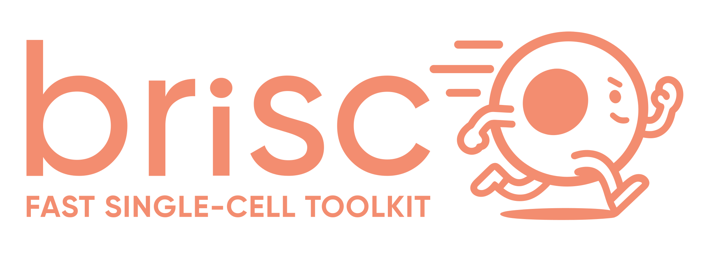

brisc is a high-performance library for analyzing single-cell data at scale. It prioritizes running as fast as possible on multi-core CPU systems, strict reproducibility, and a clean, user-friendly interface. On datasets of 1 to 20 million cells, it cuts the runtime of common workflows from hours to minutes. Get started. ›
Blazing fast
Achieved through ground-up optimization of core algorithms and effective parallelism.
Deterministic
Every step gives floating-point identical results between runs, for any number of threads.
Complete toolkit
Preprocessing, dimensionality reduction, harmonization, label transfer, clustering, embedding, pseudobulk DE, and plotting.
Interoperable
Read and write .h5ad, .rds, .h5Seurat, and 10x files; interleave Python and R analyses via ryp without intermediate writes to disk.
Memory-efficient
~2× lower peak memory usage than Scanpy by tracking cells that pass QC instead of subsetting
User-friendly
Sensible defaults, strict type-checking, and solution-focused error messages.
from brisc import SingleCell
sc = SingleCell('data.h5ad')\
.qc()\
.hvg(batch_column='sample')\
.normalize()\
.pca()\
.neighbors()\
.shared_neighbors()\
.cluster(resolution=[0.25, 0.5, 1, 1.5, 2])\
.pacmap('cluster_0.25')